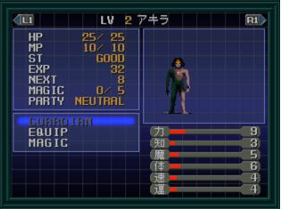
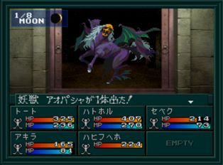

- 시설
- 공략
- 땅의 노모스 1F ~ 제1노모스
시설
- B10F : 사교의 관, 회복, 세이브
- B7F : 무기, 방어구
- B3F : 도구
- B1F : CB
- 1F : 회복
공략

맨홀에서 떨어진 후 땅의 노모스에 도착한다. 여기서 동쪽으로 가면 하자마를 만나며 이벤트가 발생하며 아키라가 아몬과 합체하는데...만화 데빌맨이 생각이 나는 장면.
아몬과 합체를 하면 모든 능력치가 +1 됩니다. 이후 철창을 통과해서 밑으로 내려가서 땅의 노모스 B10F으로 가자. 여기서 잠시 세이브와 회복을 해두고 서쪽의 계단을 통해 올라간다.
땅의 노모스에서는 아몬의 동료와 싸우거나 중마로 만들 수 있다. 아키라 루트에서 중마로 만들면 다른 루트에서 합체로 작성할 수 있게 된다. 역시 중마로 만드는 편이 더 좋다.
| 장소 |
악마 |
중마가 되는 조건 |
| B6F 북서쪽 항아리 中 |
Lv25 신수 セベク |
아키라의 힘과 지혜가 12 이상 |
| B4F 남서쪽 |
Lv38 여신 ハトホル |
신월시 이야기하면 중마가 된다 |
| B2F 남동쪽 |
Lv42 마신 トート |
위 두 악마(세베크와 하트홀)를 중마로 만들고 소환한 상태로 회화 |
각 층의 아몬의 동료를 중마로 만들면서 위로 올라간다. B1F에서 밸브를 열고 밖으로 나오면
사귀 오우거와 전투가 있다. 1F에 올라가자.
땅의 노모스 1F ~ 제1노모스
계속 진행해서 1F에 도착하면 동쪽의 계단으로 다시 내려가는 길을 통해 B1F의 CB가 있는 근방으로 오게 된다.
CB 오른쪽에 있는 계단으로 내려가면 B2F의 서쪽에서 파란 열쇠(青の鍵)를 얻을 수 있다.
CB를 기준으로 남동쪽 계단으로 내려가면 마신 토토(아몬의 동료)가 있는 장소로 갈 수 있다.
다시 1F로 돌아와서 북쪽의 듀셀의 대문(デュセルの大門 )에 열쇠를 사용하면
BOSS:요수 아오파샤와 전투를 한다. 쓰러뜨린 후 안으로 들어가면 제1노모스에 진입하게 된다.
BOSS:요수 아오파샤

| 이름 |
Lv22 妖獣 アオパシャ |
| HP |
980 |
| 마법/특기 |
アギラオ, マハザンマ, マハラギオン, ワイヤーブレス, 闇の雄叫び, デカジャ, デクンダ |
아몬의 동료를 모두 중마로 만들었다면 쉽게 이길 수 있다.